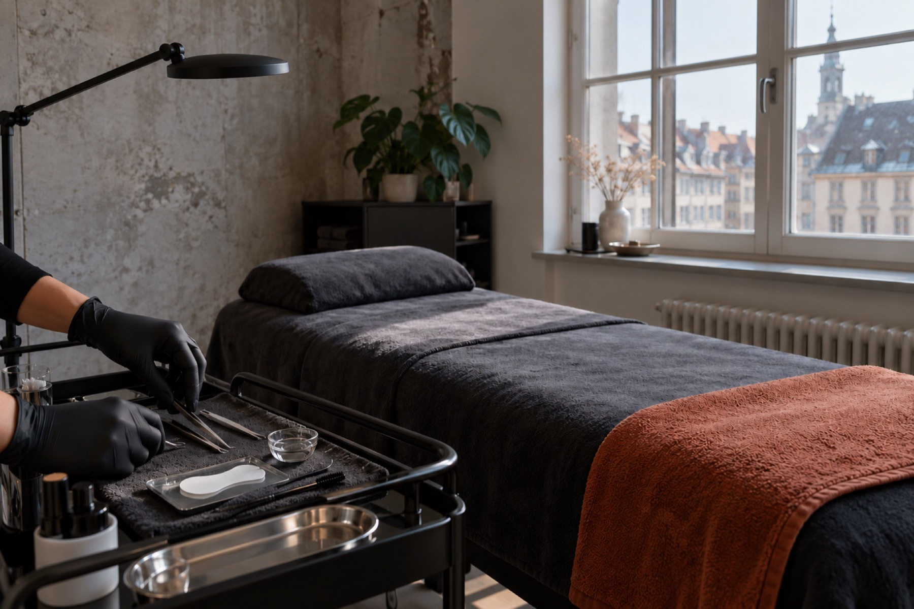
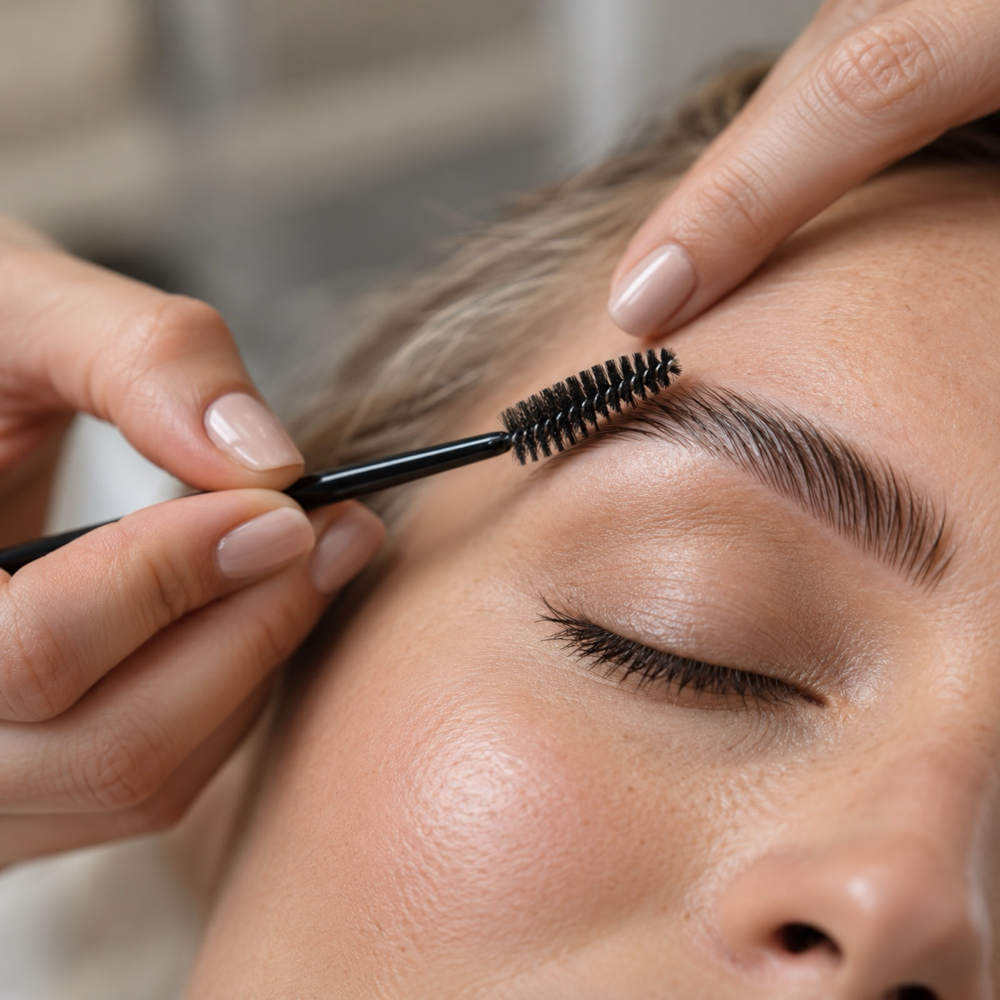

Wimpern.Brauen.Wuppertal.
Lashlift, Korean Lashlift und Browlift im 4. OG der Herzogstraße. Natürlich, präzise, ohne Umwege.

Was ich für dich mache
Korean Lash Lifting
Bei einem Korean Lashlift wird die gesamte Wimper umgeformt. Zudem ist das Korean Lashlift zeit- und pflegeintensiver, weil zwischen den Behandlungsschritten immer eine Pflege aufgetragen wird.
- Dauer ca. 75 min
- inklusive Färben
- inklusive Intensiv Regenerationsmaske
Wimpernlifting
Bei einem normalen Lashlift wird ein Teil der Wimper umgeformt. Die Wirkung hält etwa 6–8 Wochen.
- Dauer ca. 60 min
- inklusive Färben
Browlifting / Brow Lamination
Für Augenbrauen, die ordentlich und ausdrucksstark in Form liegen – abgestimmt auf dein Gesicht.
- Dauer ca. 90–120 min
- inklusive Home Care
Bei allen Liftings erfolgt immer eine individuelle Beratung.
Warum The Beauty Atelier
Typgerechte Beratung
Jeder Termin beginnt mit einem Gespräch. Du bekommst die Behandlung, die zu deinem Gesicht und deinen Wimpern passt.
Natürliche Ergebnisse
Ein gepflegter, ausdrucksstarker Look, der deine natürliche Schönheit unterstreicht.
Pflege für zuhause
Du bekommst Tipps für die Nachpflege, damit das Ergebnis lange schön bleibt.
Mitten in der City
Herzogstraße 2, 4. OG, per Aufzug erreichbar. Direkt gegenüber der DM Filiale, vom Hauptbahnhof etwa 7 min zu Fuß.
5 ★ bei Google
5 ★ / 17 Google-Bewertungen
Deine Spezialistin für Wimpern & Augenbrauen
Ich bin Jennifer, Inhaberin von The Beauty Atelier. Mir ist wichtig, dass du dich bei mir wohlfühlst und genau den Look bekommst, der zu dir passt.
Deshalb beginnt jeder Termin mit einer typgerechten Beratung. Danach arbeite ich ruhig und sorgfältig, damit das Ergebnis natürlich aussieht und deine Ausstrahlung unterstreicht.

Ablauf deines Termins
Beratung
Wir sprechen über deine Wünsche, deine Wimpern und Brauen und wählen die Behandlung, die zu dir passt.
Behandlung
Du liegst entspannt, ich forme, färbe und pflege in Ruhe Schritt für Schritt.
Pflege-Tipps
Du erfährst, worauf du in den ersten Stunden achten solltest und wie du dein Ergebnis zu Hause pflegst.
Klar. Natürlich. Auf den Punkt.
Dein Blick. Deine Ausstrahlung. Dein Beauty-Moment.
Häufig gestellte Fragen
Vorbereitung
Was sollte vor einem Lashlifting beachtet werden?
Wenn du deinen Lashlifting Termin gebucht hast, solltest du Folgendes beachten:
- Bitte erscheine ungeschminkt zum Termin.
- Kurz vor dem Termin bitte keine Wimpernzange verwenden.
- Bei Kontaktlinsenträgern: Die Kontaktlinsen sollten während der Behandlung rausgenommen werden. Bring bitte deine Aufbewahrungsdosen und ggf. die Flüssigkeit mit.
Wann kann ein Lashlifting nicht durchgeführt werden?
In manchen Fällen ist ein Lashlifting nicht möglich, z. B. immer dann, wenn die Augen nicht gesund sind, sowie bei Allergien gegen:
- Silikon, weil die Pads aus Silikon bestehen
- Peroxid, weil in Lotion 2 dieser unverzichtbare Wirkstoff enthalten ist
- Alopecia
Bei hormonellen Veränderungen wie Schwangerschaft, Stillzeit, Wechseljahren oder anderen hormonellen Erkrankungen ist eine individuelle Beratung, ob ein Lashlift möglich ist, notwendig.
Dauer
Wie lange hält ein Lashlifting?
Etwa 6–8 Wochen. Die Haltbarkeit des Liftings hängt davon ab, in welcher Wachstumsphase sich deine Wimpern befinden:
- Wachstumsphase: Neue Wimpern/Babywimpern
- Übergangsphase: Die Wimper wächst nicht mehr, sondern ruht
- Ausfallphase: Die Wimper fällt aus und es wächst eine neue Wimper nach
Was ist der Unterschied zwischen einem normalen und einem Korean Lashlifting?
Bei einem normalen Lashlift wird ein Teil der Wimper umgeformt, bei einem Korean Lashlift wird die gesamte Wimper umgeformt. Zudem ist das Korean Lashlift zeit- und pflegeintensiver, weil zwischen den Behandlungsschritten immer eine Pflege aufgetragen wird.
Nachpflege
Was sollte nach einem Lashlifting beachtet werden?
In den ersten 12–24 Stunden solltest du Folgendes beachten:
- Die Wimpern nicht waschen oder mit Wasser in Berührung bringen, weil sich die natürliche Schutzschicht (Talgfilm) nach der chemischen Behandlung neu bilden muss.
- Keine Wimpernzange nutzen.
- Keine Mascara verwenden.
- Kein Solarium besuchen.
- Nicht die Augen/Wimpern reiben.
Sollte ich meine Wimpern nach einem Lashlift zusätzlich pflegen?
Unbedingt. Bei einem richtig ausgeführten Lashlift/Korean Lashlift wird auf die Wimperngesundheit geachtet. Aber es ist und bleibt ein chemischer Prozess, der den Wimpern zusetzt. Eine Nachpflege, und bei besonders strapazierten Wimpern zusätzlich noch eine Intensivmaske, hilft den Wimpern dabei, sich zu regenerieren und hydriert zu bleiben.
Terminabsage
Was mache ich, wenn ich meinen Termin nicht wahrnehmen kann?
Melde dich bitte so früh wie möglich telefonisch, per WhatsApp oder per E-Mail bei mir, dann finden wir gemeinsam einen neuen Termin.
So findest du mich
Mein Atelier befindet sich in zentraler Lage mitten in der Wuppertaler City. Direkt gegenüber der DM Filiale. Im 4. Obergeschoss, bequem per Aufzug zu erreichen. Vom Hauptbahnhof Wuppertal etwa 500 m, 7 min Fußweg.
- AdresseThe Beauty Atelier by Jennifer
Herzogstraße 2 (4. OG), 42103 Wuppertal - Telefon0152 05140279
- E-Mailinfo@tba-jennifer.de
- Social MediaInstagram / TikTok / WhatsApp